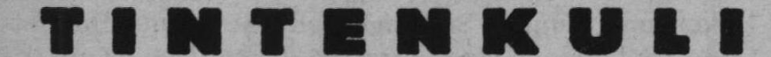
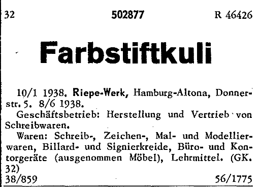
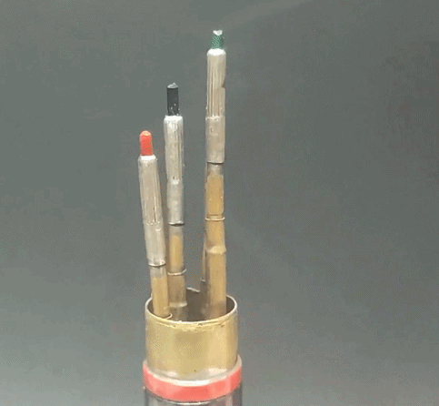
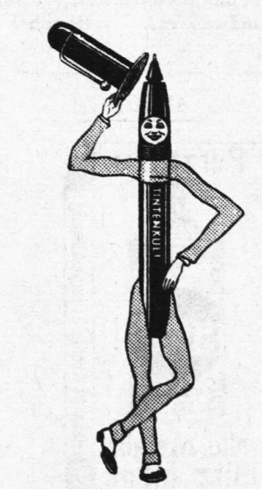

Rotring Vierfarbkugelschreiber und -Buntstifte
Rotring 4-Farben-Stifte 4-Farb-Kuli
Stand: 14.02.2026
Schon knapp nach der Gründung von Rotring 1928 ließen sie ihren wohl ersten Vierfarbstift von Waldmann herstellen: Den Farbstift-Kuli.
Später folgten der 4-Farb Kuli, 2- und 4-Farb Tikk Kuli, Rotring Quattro, Rotring Trio, Rotring 3in1, und mehr.
Rotring stellte die Mehrfarbstifte nicht selbst her, sondern beauftragte Waldmann und Fend.
Über den 'Kuli'
Rotrings Farbstift-Kuli von Waldmann
Heute versteht man unter einem Kuli eine Art Abkürzung für Kugelschreiber. Doch das war nicht immer so.Im Jahr 1929, 16 Jahre vor dem kommerziellen Erfolg des Kugelschreibers, wurde der Kuli-Begriff von den Riepe-Werken (später Rotring) eingeführt:

Der Tintenkuli war ein sogenannter Stylograph, ein Füller mit Röhrchen statt Feder, ähnlich eines heutigen Tintenrollers.
Es folgte eine Reihe verschiedener Kuli-Produkte im Laufe der 1930er Jahre.
Eines dieser Produkte war der Farbstift-Kuli. Ein vierfarbiger Buntstift mit unidirektionalem Drehmechanismus zum Durchwechseln der 1.18mm dicken Minen.


Der Farbstift-Kuli lässt uns als einziger seiner Art die tanzenden Minenhalter bestaunen, deren Bewegung die Kurven im Inneren der Mantelhülse erahnen lassen:



Sozusagen ein fleißiger, billiger Arbeiter, ein Lohnarbeiter, Lastenträger o.ä., möchte man die abwertende Konnotation abschwächen.
Ja, daher kommt der Begriff Kuli, und es spricht für den kulturellen Einfluss Rotrings, dass heute beinahe niemand von dieser Geschichte weiß.
Anfang der 50er Jahre folgte der 4-Farb Kuli, ebenfalls ein Buntstift. Mit dem 4 Farb-Tikk-Kuli erschien aber zu ähnlicher Zeit auch schon Rotrings erster Mehrfarbkugelschreiber, wobei dieser sich auf kein bestimmtes Stiftmodell festlegte und der Produktname für verschiedene Mehrfarbkugelschreiber genutzt wurde.